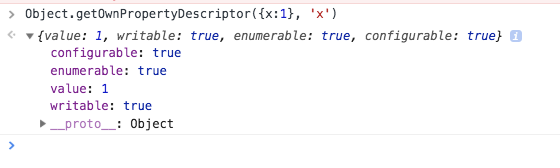
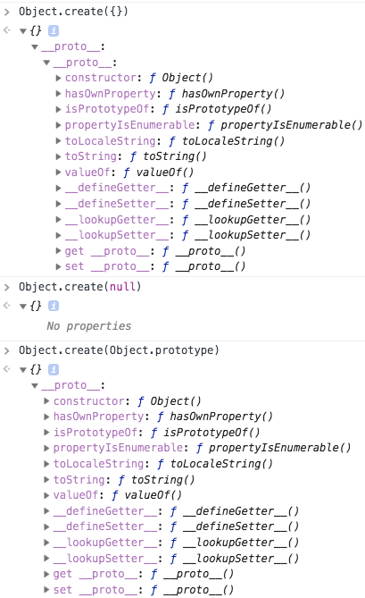

js的数组
- js数组是无类型, 动态大小,很复杂哦. 0~2^32 -1 . 是对象的特殊形式, 碰巧key是整数哦. 但比用对象快. 0起始, undefined值
- 对象继承Array.prototype的属性, 真正的数组, 类数组对象.
同理, 如果看了原型那块, 创建数组也有2种方式, 1是字面量[] 2.是new Array() (1)表示长度. 这里原型都是 Array.prototype. 因为没区别, 所有还是直接用字面量好了.
- 数组元素的读写: []号, js会将整数索引转成字符串的, 然后作为key来用. 对象不就用[]可以么..
- 注意数组的length会自动维护. 但还有个区别, 清晰的区别: 数组的索引和对象的属性名, 一句话: 所有的索引都是属性名, 但只有0-2^32 -2之间的整数属性名才是索引哦.(不过你使用非负整数字符串也是可以的,毕竟整数也是转成字符串在找的) 所有的数组都对象.. 当然也是可以用负数,非整数啊来使用, 就是超过那个范围的, 都只能当做常规的对象属性哦.
- 所来说去, 数组的索引只是对象的属性名中的一种特殊类型, 所以js的数组没有越界的错误概念, 所以只会得到undefined哦, 对象也是.
- 然后是数组既然是对象, 就可以从原型中继承元素.
- 稀疏数组哦, undefined, 这个根本不存在一个元素有点区别
[,,,]和new Array(3)不同的, 前者有3个undefined元素, 后者啥也没, 打扰了, 现在是都是empty的 啥也没 不对, 有啊, 用length就可以看到长度(这个理解不对, 空间和有没有元素无关) . 暂时不纠结这个, 都当undefined的. - 了解稀疏数组是了解js的数组的本质一部分. 只不过包含一些undefined值的数组.
- 数组长length, 区别于常规对象哦. 这个长度真的可以用来删除元素. 加空区域.
Object.defineProperty设置length为只读哦. - 元素的添加和删除. 用[],为索引赋值. push pop shift unshift头插入. 删delete a[1] 只是空间中元素没了, 空间还在, 变成稀疏数组这样. splice() 是一个通用的插入删除或替换.
- 数组遍历: 用for咯, 优化 定住
len = keys.length,然后再用i < len - 判断 不要
null和undefined用!a[i]不要undefined用a[i] === undefined, 对于不存在的暂时不理解啊in还有for in, 但不推荐,因为for in会遍历Array.prototype中的属性. es5中有forEach按索引的顺序按个传, 每个都穿哦. - 多维数组: 简单的用两次[]
- 数组方法: es3在Array.prototype中: Array.jion()转字符串, String.split()方法的逆向操作. reverse()颠倒, 替换策略, 原数组中重拍. sort(). concat().slice()返回一个片段(子数组). splice()是在数组中插入或删除后或替换(即删除+插入)元素的通用方法. 不会修改调用的数组
concat().slice()这两个会. 前两个参数指定保留(或删除), 最后一个表示插入哪些. 会插入数组本身splice(2,2,[1,2],3) => [1,2,[1,2],3,3,4,5] 也就是说concat会提取数组中的元素呢. push和pop 当栈. shift和unshift当队列, 嗯是push+shift 尾进头出. 都修改原数组哦. 注意unshift的多参数形式, 会一次性插入的. 而不是一个个插入. 和splice一样. unshift(1,2) 和先unshift(1), 在unshift(2)不一样
toString和toLocaleString.: 数组和其他对象一样有这个, 将每个数组中的元素转成字符串. 有必要是用元素的toString 逗号分隔, 和不适用任何参数调用join一样.
ES5中的数组方法
共9个新的数组方法来遍历,映射, 过滤, 检验, 简化和搜索数组.
概述, 大多数的方法第一个参数接收一个函数, ,并且会对数组中的每一个元素调用一次这个函数. 然后调用使用的函数偶3个参数: 数组中元素, 数组中元素索引, 数组本身. 然后是方法的第二个参数: 这时, 第一个函数, 这个被调用的函数看成是第二个参数的方法, 相当于第二个参数是个this. 第二个参数来使用第一个参数. es5中的数组方法都不会修改他们调用的数组, 也就是会返回新数组啦. 当然第一个参数可以修改原数组. 感觉很没说一样.
什么叫map不修改元素组, map(()=>{}) 里面的方法修改原数组, 稍稍区别咯.
- forEach 从头到尾遍历数组, 为每个元素调用指定的函数.(所以不会返回新数组). 注意是强制都会遍历每个元素, 没有for的这种break. 不顾有一种方法,用try跑出异常.function(value) {x+2} 暂时就forEach没有return
- map: 同forEach (但return一个新数组),但 那个函数要有return的返回值 前面的forEach没有return function(value) {return x+2} 有没有return可以看出是不是返回一个新数组.
- filter 返回的是一个数组, 里面是原数组的子集. 过滤. 不动原数组, 而且总是返回稠密的.
- every+ some, 读这个数组做逻辑判断. 类似一个任意, 一个存在. 也会有停止的好处, some在判断遇到第一个true就直接返回true. every遇到false就直接返回false, 不会往后面去判断了. 数学书惯例, 空数组[]调用every时true, some是false. 暂时只要这两个会提前终止遍历.
- reduce和reduceRight: 使用指定函数将数组元素进行组合, 生成单个值. 成为注入或折叠. sum product max min. 要2个参数, 和前面不同, 第一个确实是执行操作的化简函数(和前面的map forEach不同, 多了一个参数), 但第二个是初始值(不指定初始值时,用数组的第一个元素当初始值, 不甜的话会从化简函数的第一个参数传过来的当初始值. 有没有这个初始值还有有点不同的, 注意哦. 再举个例子, 没填的话数组第一个元素1当做初始值, 然后从2开始为第一次调用化简函数传入的). 说下多参数,共4个, 第一个参数是多的,表示到目前为止的化简操作累积的结果, 后面三个和map一样.. 第一次调用时, 第一个函数参数是个初始值, 也就是外面第二个参数, (这里讲的很清楚, 说出来初始值, 化简函数有4个参数.)
1 | const a = [1,2,3,4,5] |
空数组的问题[]: 直接调用reduce会报错, 如果[1]有个值, 或在[].reduce(, 2)制定了初始值, 就直接返回这个初始值, 不会调用化简函数.
当然他们也能接收一个this值咯,bind给某个特殊方法用.
reduce不仅在数值计算上, 也在交并集, 反正就是数学上, . reduce和reduceRight还是有点区别的.
- indexOf和lastIndexOf: 在数组中找给定值元素, 找到就返回索引,没有就-1. 和前面不同参数. 没有什么函数, 就传入要找的值,还有起始位置.
数组类型:
es5用Array.isArry() 判断是不是数组咯. typeof判断不了. instanceof的话会在多个frame中混淆.
1 | var isArray = Function.isArray || function(o) { |
看得懂上面的了
类数组对象:
js数组一些特性是其他对象没有的:
- length这个自动更新
- length会删除元素
- 从Array.prototype中继承一些有用的方法
- 其类属性为Array
可以把拥有一个数值length属性和有对应非负整数属性的对象当做数组.
类数组虽然不能直接调用数组方法和length得到预期. 还是能用数组遍历的代码.
反正数组和对象的[]用法一样.
arguments和DOM操作得到的都是类数组对象. 怎么判断呢 用length是个有限的整数值判断. 没啥用啦.
反正es5中 所有的数组方法都是通用的,数组, 类数组都能用. concat的话例外哦. 类数组虽然没有继承来自Array.prototype但可以间接用Function.call啊 比如Array.prototype.map.call(), 所以常见到有这么用的.
作为数组的字符串:
字符串的行为类似只读数组(typeof还是string). 除了用charAt来访问单个字符 也用[]
s.charAt(0)
s[0]
反正不用charAt好了, 用[]挺好, 然后及时通用的数组方法可用在字符串上咯. 用Function.call 只要记住是只读 什么push sort reverse splice肯定不行
对象总结
对象是一个key: value的, 无序集合哦. 看成映射也行, 比如hash, dictionary, associative array.
对象是动态的, 可以新增和删除属性. 通过对象的可扩展性也可以定住.
引用
先说对象的3个属性和4个方法
原型prototype, 类class, 可扩展性extensible attribute
- 原型: 以前常说的”o的原型”就是这个”o的原型属性”
通过对象字面量{} 使用Object.prototype 原型, new+构造函数创建的实例用构造函数的prototype作为他们的原型, Object.create()的第一个参数作为原型.
详细讲js原型的: javascript原型 结合比较
上面的而文章会用到prototype或__proto__属性获取获取对象原型.
es5中用Object.getPrototypeOf()方法来查找对象的原型,更正式.
记得这会有3个了,
prototype或__proto__或Object.getPrototypeOf()
还有就是检测一个对象是不是另一个对象的原型, 用isPrototypeOf(),原理功能上的话和instanceof类似
- 类属性
class attribute:是一个字符串,表达对象类型信息.es5中都没有提供这个方法, 只有一种简洁的方法可以查询他, 就是toString 这个和那个Symbol.toStringTag一起看
想要获得对象的类, 可以调用对象的toString()方法, 然后提取返回字符串的第8个到倒数第2个之间的字符.因为很多对象继承的toString()方法重写了, 为了能调用正确的toString, 所以必需要间接得调用Function.call()方法
1 | Object.prototype.toString.call('foo').slice(8, -1) |
- 可扩展性
extensible attribute:表示是否可以给对象添加新属性(可以删除哦). 所以内置对象和自定义对象都是显示可扩展的额,宿主对象的可扩展性由javascript引擎定义(反正也是可扩展的).
一共3个, 从对象属性覆盖到属性特性: Object.preventExtensions()和Object.seal()和Object.freeze() 都是只影响自有属性, 和继承属性无关. 从对像可扩展到属性的可配置再加上属性的可写性.
对象的Object.preventExtensions()和设置属性的configurable一样,一旦设置false就不能再次设置了.只还剩一个freeze的话还能改点可写性诶.
es5中通过将对象传入Object.isExtensible()来判断该对象是否是可扩展的, 想让对象不可扩展用Object.preventExtensions() ,不顾一旦变为不可扩展, 那就不能再变回来了. 而且注意这个只影响本对象自身的可扩展性. 不可扩展对象的属性可能仍然可被删除.
目的是为了lock, 避免外界干扰. 对象的可扩展性通常和属性的可配置型和可写性配合使用:也就是前面的规则.
还有个更进一步, Object.seal() 除了将对象设置为不可扩展, 还可以将对象的所有自有属性都设置为不可配置.(不能添加属性, 已有的属性也不能删除或修改), 已有的可写属性依旧可以设置. 也不能解封, 用Object.isSealed()判断
在进一步: Object.freeze()更严格地锁定对象 冻住了, 除了将对象设置为不可扩展和属性设置为不可配置外, 将他自有的所有数据属性都设置为只读, 存取器属性不受影响. 使用Object.idFrozen()判断
Object.preventExtensions()和Object.seal()和Object.freeze()这3这都返回传入的对象, 所以可以用该函数嵌套的方式调用他们.
4个方法
没啥用的toString(), toLocaleString(), toJSON, valueOf()
序列化对象
指将对象的状态转为字符串.也可以将字符串还原为对象, 这个不就是JSON.stringify()和JSON.parse()
在说对象的属性了
前面讲了3个object attribute, 现在讲下property attribute还有也是3个
es5中 对象的属性是任意字符串(不重名)+ getter和setter函数
然后出了key: value外, 每个属性还有一些和他相关的值, 叫属性特征. 3种:
- writable(能设置改key的value么),
- enumarable(能用
for/in,Object.keys和JSON.stringify返回该key么), - configurable(能删除或修改属性, 但不包括对象属性的新增, 那是对象属性控制的),
es5以前都是可写可枚举,可配置哦
还有就是: 3类JS对象和2类属性
- 内置对象 native object, ecma规定的对象或类: 数组, 函数, 日期, 正则
- 宿主对象 host object , 由js解释器所嵌入的宿主环境定义. 如浏览器啊 node啊
- 自定义对象 user-defined object, 你自己写代码的时候定义的
- 自有属性 own property 直接在对象中定义的属性
- 继承属性 inherited property 对象原型上定义的属性.
属性的特性: 一个属性包含1个名字和4个特性, 3方法Object.getOwnPropertyDescriptor(),Object.defineProperty()和Object.defineProperties()
除了名字和值外, 属性还包含一些他们可写writable,可枚举enumerable和可配置configurable的特性.
es5可以通过这些api给原型对象添加方法, 并将它们设置为不可枚举的, 这让他们看起来更像内置方法
也可以给对象定义不能修改或删除的属性, 借此’lock’这个对象
下面我们会讲存取器属性, 和数据特性. 这里可以把存取器属性getter和setter看成是属性的特性, 数据属性value也当做是属性的特性.
所以我们可以认为一个属性包含1个名字和4个特性: 名字是key, 4个特性: value, writable, enumerable, configurable
存取器属性不具有value和writable, 它的可写性由setter决定, 所以存取器属性的4个特性是get, set, enumerable, configurable.
为了实现属性特性的查询和设置操作, es5定义了一个property descriptor对象, 这个对象代表那4个特性.
所以数据属性的描述符对象的属性有value, writable, enumerable, configurable.
存取器属性的描述符对象则用get和set代替value和writable,
其中writable, enumerable, configurable是布尔值, get和set当然是函数值.
分别为添加数据属性, 添加存取器属性.
通过调用Object.getOwnPropertyDescriptor()可以获取某个对象特定属性的属性描述符.

只是对当前对象的自有属性, 如果是继承属性和不存在的属性就是undefined
像要继承属性的特性需要遍历原型链, 用Object.getPrototypeOf()找打指定对象的原型, 然后用Object.getOwnPropertyDescriptor()
接下来是设置属性的特性了, 用Object.defineProperty(), 传入要修改的对象, 要修改属性, 以及属性描述符对象.
枚举指的是能不能被for/in还要能不能被keys, 还有JSON.stringify 就是影响这3个函数结果.
只能读取对象本身的可枚举属性，并序列化为JSON对象。
而configurable指能不能再次通过Object.defineProperty()来设置咯
注意: 传入Object.defineProperty()里的属性描述符对象, 就是那第3个参数, 不必包含4个特性, 没传入的默认值当false或undefined. 而对于修改已有的属性特性, 不传入就是保持原来的. 这个不能修改继承属性,是要么新建自有属性, 要么修改已有属性
修改多个的话用Object.defineProperties(), 第二个参数变成一个映射表了.
可对象的扩展性
extensible attribute和属性的可配置configurable的区别, 可扩展说的是能不能新建一个属性. 可配置将的是能不能再次修改这个属性的特性了, 分别是新建和设置
有个规则看下:
- 如果对象是不可扩展的, 说的是可以编辑已有的自有属性, 但不能新建添加.
- 如果属性是不可配置的, 不能修改它的可配置下和可枚举性.
vale和writable可以改诶, 那get和setter也能改. - 如果存取器属性是不可配置的, 不能修改
getter和setter, 也不能转成数据属性 - 如果数据属性是是不可配置的, 则不能转换成存取器属性. 不能将她的可写性从
false到true, 但可以从true到false - 如果数据属性是是不可配置的和不可写的, 就是上面说的. 则不能修改它的值. 然而可配置加上不可写的话,这个值是可以修改的.(实际上是先将他标位可写, 然后修改它的值, 然后转换为不可写)
复制对象的属性, 这个只是简单地复制属性名和值, 这里默认没有复制属性的特性,也没有复制存取器属性, 只是简单地转换为静态的数据属性.
所以要加上用Object.getOwnPropertyDescriptor()和Object.defineProperty() 记得要把这个方法加到Object.prototype中, 然后设为不可枚举哦.
属性函数getter和setter
对象的属性是有key:vlaue和一组特性构成的. 在es5中,属性值value可以用两个方法替代. 就是getter和setter 这个定义的属性也叫做存取器属性(accessor property). 不同于数据属性(data property)只有一个简单的值.
getter方法没有参数, 但返回一个表达式的值, setter方法传入参数,不需要返回值.
注意: 存取器属性是不具有可写性(writeble attribute), 存在getter和setter 就是可读写, 只有getter就是只读咯,只有setter就是只写咯. 然后另一个是undefined
用法最简单的就是用对象直接量语法的一种扩展写法.
1 | var a = { |
存取器属性定义为一个或两个同名的函数, 注意这个函数没有使用function关键字, 而是使用set和get 也没有啥冒号的把属性名和函数体分开.
js把这些函数当做对象的方法来调用, 写法我觉得类似class中的方法, 也有thisthis用法可以看只在运行时确定 javascript中this指向由函数调用方式决定
和数据属性一样, 这个存取器属性可以继承的, 这个就像是一个对象中的方法么, 对当然可以继承.
getter挺好玩的, 比如给对象加一个取得随机数的方法.
对象常用的用法是:创建3, 查找和设置2, 删除1, 检测, 枚举
创建对象, 注意和原型结合看
3种方式创建: 对象直接量{}, new, Object.create()
主要是创建后的原型不同.
{}: 创建后原型就是Object.prototype
key的话如果用了
保留字比如for要用"for"套上, 还有"a b""a-b"都可以,只要是字符串都行, 不过不建议啦.
注意: 对象直接量{}是一个表达式, 每次运行都会创建并初始化一个新的对象. 所以里面的key的value也都会计算一次,
new+构造函数: 这个很熟悉了, 看前面的原型: javascript原型
原型: 只有
null是没有原型的.Object.prototype是最上层那个,也没有原型,其他都会有,
所有的对象直接量{}创建的原型是Object.prototype, 用new+构造函数创建的就是对应的构造函数.prototype(看图哦,原型中的function Function注意点)
Object.create(): 创建一个对象, 传入的第一个参数是这个对象的原型. 就不用你prototype来手动创建, 然后用constructor, 主要是会自动带着constructor
Object.create()是一个静态函数, 不是提供给某个对象调用的方法, 所以可以直接调用.
注意
Object.create({})和Object.create(null)不一样. null的创建的是一个没有原型的新对象 哦,前面也说过, 只要null是没有原型的. 就是基础方法都没有, toString都不能用.
当然如果想创建一个空对象(有原型的), 比如像前面通过{}或new Object()创建的对象. 用Object.create(Object.prototype)

这理一理顺, 还是很容易懂的 可以通过任意原型创建新对象, 就是可以使任意对象可继承.
属性的查询和设置
用. []来获取或设置属性的值. 运算符左边当然是一个对象咯..的右侧是一个属性名称的简单标识符[]右侧是一个计算结果是字符串的表达式.这个字符串就是属性的名字
1 | a.b a.['b'] |
es5的['for']是允许的, 但不能用a.for, 关键字 保留字, 这也是点和[]的区别
再说下关联数组, 上面的.类似C或Java中访问结构体或对象的静态字段. []更像一个数组. 只是这个数组是通过字符串索引而不是数组索引, 这个就是关联数组(associative array, 或hash, dictionary).
js中的对象都是关联数组, 其那面说键值对啊, hash dictionary啊
.和[]区别
js是弱类型, 所以任何对象都可以创建任意数量的属性, (严格当然是有限的)
但当通过点.来访问对象的属性, 属性名通过一个标识符来表示, 标识符必须直接出现在js程序中, 他们不是js的数据类型, 所以程序不能修改他们(重点就是标识符不是数据类型)
而通过[]来访问对象的属性时, 属性名是字符串表示, 字符串是js的数据结构, 程序可以在运行时修改和创建他们.
标识符就是变量名字, 有个命名规范, 而字符串只要是””都可以啊
属性访问器
用Object.property的property就是一个js的标识符.
而object[property_name]
property_name 是一个字符串。该字符串不一定是一个合法的标识符；它可以是任意值，例如，”1foo”，”!bar!”， 甚至是一个空格。
一般动态都用[],而.是提前知道有这么个属性. 标识符是静态, 写死在程序中.
再说下前面的 own property和inherited property
给对象赋值只会当前的对象中设置, 查找的话先从本对象开始, 没找到就沿着继承来的往上找
只在查询时体会到继承的存在,设置因为只在原始对象上, 所以和继承无关
属性赋值不是设置属性哦, 这个属性赋值会先查询一遍原型链, 然后如果设置了只读, 不关在链上哪个原型上设置的, 那么都不能修改哦.
查询属性,设置属性,给属性赋值3点不同
属性访问错误
属性访问你可以返回一个值, 也可以设置一个值(当然设置时一般都是先访问到后才能设置).但也可能有错误啊.
a.sdfsdf 没有就返回undefined
但如果这个a对象不存在, 即: null或undefined的情况下,再去获取它的属性就是报错error了.
所以访问是用 book && book.name && book.name.length 这种方式
还有一些属性是可以访问,但不能设置, 只读的哦, 或者就是那个对象不允许新增属性. (这个和null undefined报错不同,这不报错诶, 在es5的严格模式中修复)
3点,设置失败报错:
- o的属性p是只读的, (例外是
defineProperty()方法中一个,或者是对象那个Object.freeze()) - o的属性p是继承的, 然后是只读的, 不能通过同名啊自身属性来覆盖这个继承的只读属性.
- o中不存在自有属性p,o没有使用
setter方法继承属性p,并且o的可扩展性(extensible attribute)是false. 这里我有点懵逼 继承是通过setter函数实现的么?
删除属性, delete
delete 属性访问表达式 比如 delete b.name 或 delete b.['name']
这个有问题, 他只是断开属性和宿主对象的联系, 就像对象引用, 东西还在,只是引用的指向不在.(所以销毁对象的时候要遍历属性中的属性, 深度遍历哦)
delete也只能删除自有属性, 不能删除继承属性, 继承的要去那个对象上删除. 防止有其他对象也用到这个原型, 也继承呗
返回一个boolean
删除成功或删除不存在的,删除继承的属性, 删除无意义的 都返回true
1 | delete o.x |
返回false的是: 不能删那些可配置性(configurable)为false的属性, 只要记这个就好, 反正其他都是true, 当没事发生或无意义
检测属性4种方法
js中的对象可以看成是属性的集合., 查一下某个属性是否存在于某个对象中,可以通过,in hasOwnProperty() propertyIsEnumerable 甚至只通过属性查询也可以做到这一点.
in:"x" in o左侧属性名(字符串), 右侧对象.如果对象的自有属性或继承属性包含这个'x'则会返回true- 对象的
hasOwnProperty()方法用来检测对象有没有这个自有属性, 不会去看继承的. propertyIsEnumerable()是hasOwnProperty()的增强版, 只有检测到是自有属性并且是可枚举的才返回true
除了in 还要用!== undefined来判断有没有自有属性和继承属性. 不是!=in只有一种场景很好用: 区分不存在的属性和存在但值为undefined的属性
枚举控制
以前检测对象属性的时候用for/in,遍历自有属性和继承属性
对象继承的内置方法不可遍历, 但在代码中给对象添加的属性都是可枚举的.(除非用property arrtibute设置为不可枚举)
es5前, 在许多实用库给Object.prototype添加了新方法或属性, 用for/in可以都枚举了, es5后可以设置为不可枚举.
也可以过滤下for/in返回的结果
es5还有2个枚举属性名称的函数Object.keys() 可枚举的自有属性和Object.getOwnPropertyNames() 返回自由属性, 包括枚举和不可枚举
这里和hasOwnProperty() 不一样哦, 一个是判断自有属性有么有这个, 一个是返回所有的自有属性
别忘了JSON.stringify()